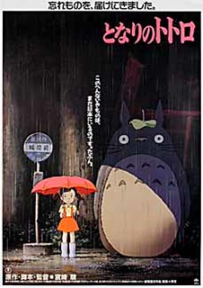

About Me
My name is Joshua Kakuschke. Thank you for checking out my Top Films website. I've always loved film. I enjoy watching movies, experiencing their stories, and falling in love with characters. I hope to create films of my own one day. On this site, I share honest reviews, recommendations, and reflections on films old and new.
My Top 5 Films
